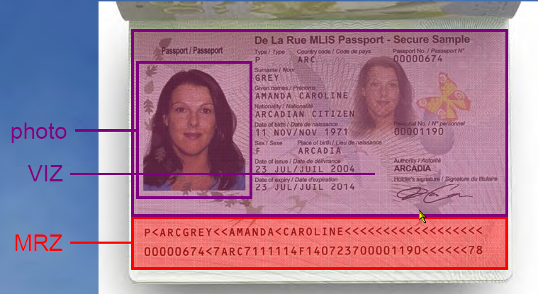
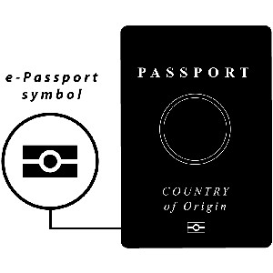
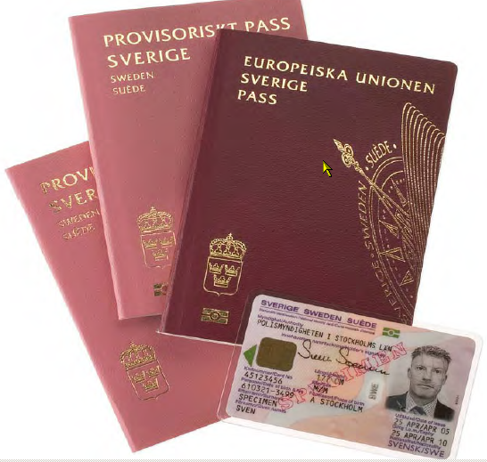

panopticon - a circular prison with cells distributed around a central surveillance station; proposed by Jeremy Bentham in 1791 (www.thefreedictionary.com)
Several years ago word got round that the US government was going to put an RFID chip into a passport. Privacy advocates rallied and ranted about the insecurity of the technology, the lack of standards, the foibles of technological advance, and the massive infrastructure expenses required to build a system to support an RFID passport and pronounced the idea Dead On Arrival. Congratulations are due to those intrepid folks because their voices were heard, their concerns noted, and the International Civil Aviation Organization (ICAO) returned to the drawing boards and have now issued specifications for an RFID-enabled biometric passport that focuses on the technical concerns and addresses them quite handily. The concept remains intact and is now much stronger for the technical tests it was subjected to, rather than weaker for its violations of human rights principals. I found myself with the opportunity to dig deep into the issue directly from the horse’s mouth, so to speak, and if you’re interested, I’ll tell you all about it.
ICAO – International Civil Aviation Organization. This is, for lack of a better reference, the United Nations Air Travel Overlord. It is a multi-national, transnational organization that sets the standards and rules by which international flights are conducted. One of their top mission priorities is to regulate border crossings by airplane. As such, they have taken on the task of developing the standards which all nations will adhere to when sending or receiving international passengers on flights across their respective borders. This scope has been expanded to the entire design of specifications for passports worldwide.
Interpol – International Criminal Police Organization. If you weren’t aware, this is an international police force that focuses on crimes that cross borders, specifically terrorism, human trafficking, and smuggling, among others. They have been very busy bees, setting up the I-24/7 global network of databases which governments and police agencies are using to track criminals internationally.
IATA – International Aviation Travel Association. A trade alliance of airlines that regulates everything from what seats will be available on a plane to the price-fixing rules airlines must adhere to when selling you a ticket. In our story, they are one of the victims, though I would hardly call this enemy of my enemy a friend. They are desperate to get in on the whole scheme in order to get their piece of the power-pie and feel more than a little snubbed that they weren’t invited to the party earlier.
ISO – International Standards Organization. If you’re into computers, you’ve heard this acronym thrown around. This is the organization that decides technical specifications for all technologies. If you’ve ever heard the term, “ISO standard”, this is who they are talking about. In this case, they set the base standards of the RFID chip that is being embedded into passports.
Our story actually starts some 30 years ago, when ICAO first recommended that passports have a Machine Readable Zone (MRZ) at the bottom of the data page.
|
 |
The bit in red is the machine readable zone.i
|
Probably 90% of today’s passports have this, and it’s not a big deal, really. It’s just a way for a scanner to read the same data on the front of the passport and push it into a computer screen with a wee bit of check-digits to verify on. But it set the stage for the universalization of the passport internationally.
Today, ICAO has revealed its mandated specifications for the new generation of passports.
But why does ICAO feel the need for a new passport? Their justifications are quite simple and obvious.
Holista-what? Yeah, that’s the one they snuck in there and it’s a fun, fun phrase. Holistic, as in broadly viewed, all encompassing, well-rounded. Transnational as in global, not limited to national borders. Identity integrity, as in verifying that you really are who someone thinks you should be.
If you’re worried about National Id or Real Id, baby you got another thing coming.
So what they want, right there, is the ability to identify any traveler by any number of means, from any angle, in any country, with as much absolute certainty as can be had; and not a negative identification, as in, “Whoever you are, you’re not Osama.” But positive identification, “You are not Osama. You are Joe Paxer.” Positive identification, worldwide, at any time, by all governments, even ones that won’t claim you.
But there are obvious problems with trying to identify all the traveling citizens of all the governments in all the countries in the world. All these governments have different databases, some don’t have any databases of the citizens at all, and if they do, they are in different formats with different purposes and different abilities. The logistics of trying to interconnect 189 governments’ databases quickly escalates well beyond the realm of “nightmare” into some kind of Lovecraftian singularity of technological horror.
Enter Interpol, stage right. The I-24/7 network constructed by Interpol is more than just network. It is in its third year of operation and they’ve got the bugs worked out. There are several databases behind the I-24/7 network, of which 189 countries including the United States are members of and are connected to. I’ll just list a few:
Interestingly, all governments are connected to these databases, except Somalia. The US, of all the countries, is the least connected only have Interpol stations at two entry points in the US, at the border to Mexico and Texas, and New York. I presume that many national border police and Customs offices simply connect to those stations for Interpol access instead of directly to the Interpol I-24/7 network.
But Interpol is more than just an international police force or a police networking agency. They have the ability to request that an identity (remember, you aren’t a person, you are a holistic, transnational identity) be denied international travel by simply making the request to the UN. That request is propagated out to the member countries who are obliged to comply and detain whoever matches that identity they can find and turn them over to Interpol.
So Interpol and the UN are in bed together, and ICAO is a branch of the UN responsible for determining passport specifications. A passport that is universally similar can be universally added to a single database, even if that passport contains biometrics, and Interpol has a global network of databases already in operation. Nice convergence, don’t you think?
Now, this is no conspiracy. None of this is secret stuff and Interpol really is interested in catching criminals and beating up child molesters and ICAO really is interested in giving people better methods to guarantee they are who they say they are. There is no “We’re gonna get the peasants now!” mentality. The problem is not insidious intent, but typical scope creep and a basic assumption that differs from those of us in the freedom movement.
That scope creep is nothing more than, “Let’s try this one more thing,” over and over again. And the assumption is, quite simply, that we, the peasants, can and should trust them and all of their actions implicitly. There are lots of discussions on privacy of the passport holders, but always privacy between me and you. Not once do they mention privacy from the government or the police forces. It simply doesn’t enter their minds. The concept is as alien as a revolution without dancing.
This is not to excuse any of their actions. On the contrary, pointing out that they do not have evil intentions only emphasizes what the road to hell is actually paved with. And let there be no mistake, this road is indeed paved. Not planned, not under discussion, paved. It’s a done deal. The e-Passport specification is law. You never got to vote on it. There were no legislators to petition. No letters to write. No recourse other than a newspaper, if they would even bother with such dry material. ICAO is not an elected organization, and they developed their mandate with only the input they specifically sought. They are not beholden to whatever government claims you, rather that government is beholden to them. That is why I called them a transnational organization, as their authority exceeds the nations that are a part of it.
So while we were complaining about Real ID, and National ID, and Piggly-Wiggly Grocery store cards, ICAO simply took the entire debate out of the public view and made it happen. E-Passports, passports with an embedded RFID chip are here and they are here to stay. As of the end of 2006 16 nations including the United States will be issuing the e-Passport according to ICAO specifications. Another 43 nations will be compliant by the end of 2007. And by 2010, all 189 member nations are required to be compliant.
Today, right now, as you are reading this, there are already more than 50 million e-Passports in circulation, and most people who have them don’t even know it. It seems that ICAO wanted to avoid the much maligned “RFID” stigma, so they dropped it from open discussion, changed the name, and the entire thing slipped beneath the radar. So much so that, when they had a trial run of the technology at LAX, folks carrying e-Passports didn’t get into the express e-Passport lines, because they didn’t know what they were carrying, or what the symbol on their passport meant. ICAO has since tasked their PR department to promote and education the public on their e-Passports.
|
 |
The e-Passport symbol and its suggested location on international passports.ii
|
If you want a non-chipped passport, you’d better get it now. 2010 may seem like a long way off, but the countries that struggle to meet that deadline are the same ones that struggle for things like food and water. Germany has already fully implemented the e-Passport. Most of the European Union members are geared up for it as we speak and will have it in 2007. As I mentioned earlier, the US is already issuing them. Every day that passes increases your chances of getting a chip in your passport.
And even if you do get one without a chip, all you’ve done is buy some time. Many of the countries are scaling back the validity of their passports to 5 years instead of the more common 10. What this means is that by 2020, every legal international traveler will have an e-Passport, as all the non-chipped passports in the world will have expired by then. Many travelers will have had 3 passport issuances or renewals by then, one every 5 years.
The e-Passport is here and it’s here to stay.
Doesn’t bother you? You don’t travel internationally? Pay attention. Interpol and ICAO both have openly stated that e-Passport is the first step, not the last. Airports are a convergence of security issues as you have people, property, airplanes, airports, and national and international borders all sardined into little aluminum tubes on air. Of course that’s the priority. Of course air travel is the focus today. But the specification for biometrics and the RFID chip structure has been specifically designed to be suitable for use in all travel documents, National IDs, and social service IDs. Indeed, the passport specification itself allows the issuing country flexibility to include any additional functionality they want, including additional biometrics, cross references to social service records such as Social Security, or even allowing the bearer to add in his loyalty shopping cards and bank accounts, if the country allows it. All of it tied directly to your biometric data and uploaded to national and international databases for tracking. Fully implemented, the ICAO specification could be used to secure identity not only at airports, but land and water borders, concerts, sports events, critical infrastructure and industry, and even your local shopping mall. Cameras recording your every public move are passé, last year’s news. The problem with camera recordings is that there aren’t enough people to watch them. And that brings us to the brilliantly logical and effective piece of the ICAO specifications for biometric RFID passports, facial recognition biometrics. Stay tuned!
|
 |
Picture of the Swedish e-Passport and chipped National ID.iii
|
i Image provided by the International Civil Aviation Organization.
ii Image courtesy of the United States Department of Homeland Security
iii Image provided by the Government of Sweden